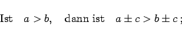
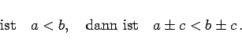
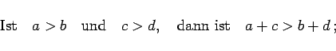
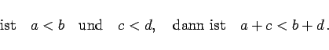
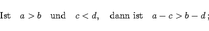
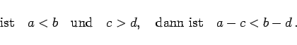

Inhalt Index DeskTop Bronstein

 Arithmetik Ungleichungen Reine Ungleichungen Eigenschaften der Ungleichungen vom Typ I und II
Arithmetik Ungleichungen Reine Ungleichungen Eigenschaften der Ungleichungen vom Typ I und II


|  | (1.102a) |
|  | (1.102b) |
Durch Addition oder Subtraktion ein und derselben Größe auf beiden Seiten ändert sich der Sinn der Ungleichung nicht.
|  | (1.103a) |
|  | (1.103b) |
Zwei gleichsinnige Ungleichungen können seitenweise addiert werden.
|  | (1.104a) |
|  | (1.104b) |
Von einer Ungleichung kann eine andere ihr ungleichsinnige Ungleichung glied- oder seitenweise subtrahiert werden, wobei das Ungleichheitszeichen der ersten Ungleichung erhalten bleibt. Im Unterschied dazu lassen sich gleichsinnige Ungleichungen nicht gliedweise subtrahieren.